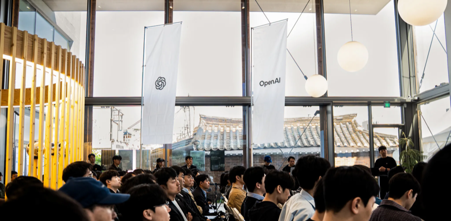
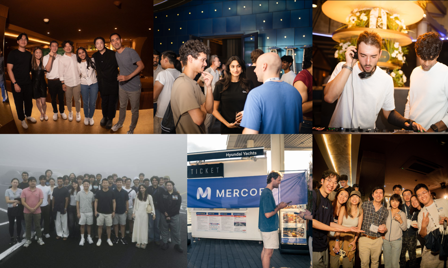
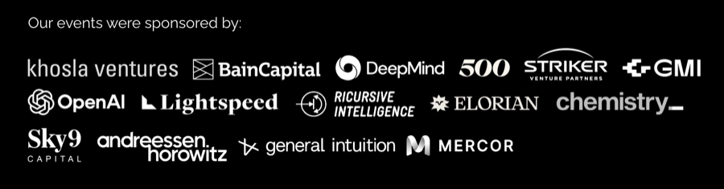
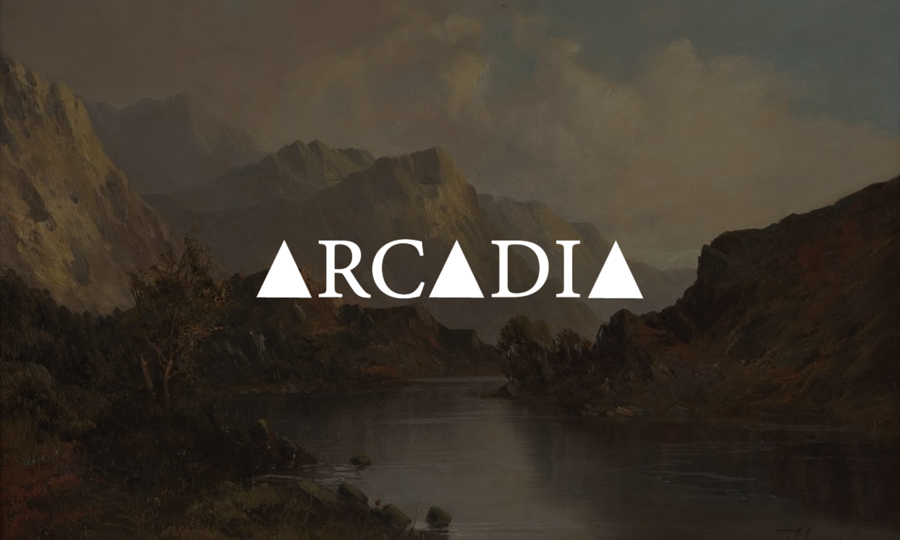
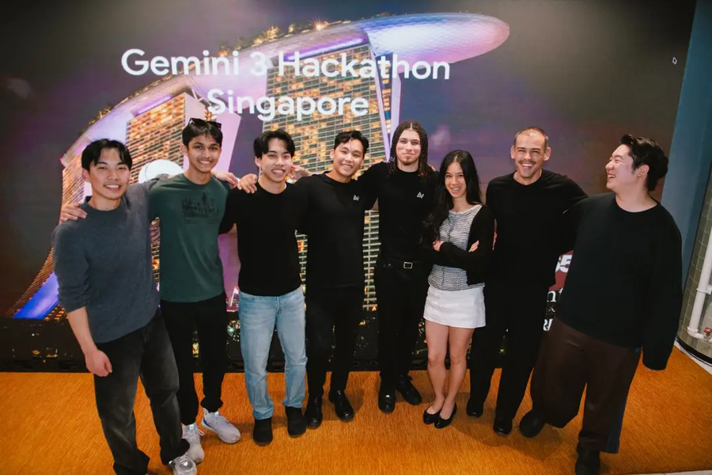

Dear Limited Partners,
We’ve been moving fast. Over the past few months, we’ve welcomed several new LPs, hosted 11 events during ICML with the support of Khosla Ventures, Lightspeed, and 20+ other sponsors. We’re now just weeks away from the first close of Fund I.
BlueBrown has built a strong presence across both the U.S. and Korean startup ecosystems, serving as a bridge between the two markets. Today, we are known for organizing the best AI communities in Asia and U.S., including large-scale hackathons, networking mixers and executive dinners from Seoul to Silicon Valley.
GTM Partner for US companies entering Korea

We have established ourselves as a leading GTM partner for frontier AI companies expanding into Korea. To date, we have served as the primary Korea GTM partner for companies such as OpenAI, Anthropic, Google DeepMind, Genspark, and Manus AI, helping them build local communities, host recurring events, source talent, acquire customers, and develop strategic partnerships within the Korean market.
We believe Korea has emerged as one of the most important AI markets in the world. South Korea ranks among the highest globally in paid adoption of ChatGPT, Claude, and Gemini, making it one of the most valuable international markets for leading AI companies. As frontier AI companies increasingly seek to establish a presence in Korea, BlueBrown is uniquely positioned to help them navigate the market and accelerate growth.
Our strategy is straightforward: become the most trusted Korea GTM partner for AI companies. We help companies enter and grow in Korea, from early-stage startups to some of the largest AI companies in the world.
This has also become a differentiated way for us to win allocation in competitive rounds. By building trust with founders through Korea expansion, we often develop relationships long before we approach them as investors. Instead of competing for allocation purely with capital, we can bring something useful to the table: local relationships, market access, and hands-on support in Korea. Over time, this has given us access to investment opportunities that would otherwise be difficult to reach.
ICML 2026 was BlueBrown’s stage

During ICML week in Seoul, we hosted 11 events over six days alongside leading venture funds and frontier AI labs. Highlights included an exclusive two-day Jeju Island retreat with Khosla Ventures, where we flew in 49 founders and researchers from Silicon Valley, and a large-scale rooftop happy hour with Striker Venture Partners at the Mondrian Seoul, welcoming more than 200 researchers, founders, and investors.
These events strengthened our relationships with the world’s leading venture firms. Through our partners and sponsors, we’ve built a trusted co-investor network that enables us to share deal flow, exchange founder referrals, and connect portfolio companies with exceptional talent.

Learning from observation
Over the past few months, we’ve had the privilege of spending time with some of the world’s leading AI founders, researchers, and investors — primarily across the United States and China. Those conversations have given us insight into where the AI ecosystem is heading and how the next generation of category-defining companies is being built. As a result, we’ve refined both our investment strategy and the way we engage with founders.
Becoming a Trusted Peer, Not Just Another VC
After spending time with top researchers and founders in Silicon Valley, we learned that the best founders often prefer building relationships with angel investors rather than venture funds.
Many of these builders avoid talking to VCs when they aren’t fundraising because they believe most investors aren’t technical enough to understand the research or products they’re building. While this doesn’t apply to every investor, it is a common perception. Instead, they prefer speaking with founders, researchers, operators, and angel investors who can engage with them as peers.
This insight shaped our strategy: we use the fund primarily as a vehicle for deploying capital while keeping its brand intentionally low-profile until we have an established track record. This allows us to engage founders first as friends and operators who can help, rather than as investors looking to source deals.
Earning Trust Before Asking for an Allocation
From day one, BlueBrown’s fund strategy has been to earn allocations in highly competitive startups by writing small initial checks after building trust with founders long before they enter a competitive fundraising process.
Our investment thesis has never changed. What has evolved is our conviction that helping founders before company inception is even more important than anything else.
The best founders often reserve their earliest angel allocations—typically at the lowest valuation—for friends and trusted supporters before they officially begin an institutional fundraising process. The only way to earn that “friend” status is by consistently helping founders, solving problems alongside them, and contributing to their journey long before asking for an allocation.
Warm Introductions Are the Foundation of Our Fund
After helping more than 50 founders over the past few months, we realized that one of the most valuable ways to support early-stage founders is by introducing them to the world’s best investors. Even exceptional founders with strong track records often benefit from warm introductions to top-tier funds.
At the same time, leading venture firms value high-quality founder referrals. As we continue to build trust with both founders and investors, these introductions have become mutually reinforcing: founders know we’ll connect them with the right investors, and investors know the founders we introduce are exceptional. This flywheel creates strong word-of-mouth referrals on both sides, strengthening BlueBrown’s long-term access to the highest-quality founders.
We Back Our Friends and Fellows
The people around us are already becoming the defining founders of the next generation. We know them beyond pitch decks and partner meetings. We’ve been at the dinners, on the late-night calls, in the group chats, and around all the events we’ve hosted in the past. We’ve seen how they think, how they operate, and how they respond when things break and no one is watching.
That kind of conviction cannot be manufactured through diligence. You can study a market, analyze metrics, and run references, but it is much harder to replicate years of firsthand context on a person.
Some investors see closeness as a source of bias. We see it as our advantage.
Because the best founder investments are often the ones you would have made in the person long before there was a company to invest in.
This is the whole reason we built AttentionX, and why we’re now launching Arcadia in the U.S. We build communities where we become friends with exceptional people, those friends bring us other exceptional friends who are building, and we back the best founders within that circle.
The Launch of Arcadia Fellowship

We are excited to announce Arcadia Fellowship, a fellowship dedicated to supporting researchers and technical founders in Silicon Valley who are building a startup or thinking about starting one.
Arcadia is being built by the same team behind AttentionX. Our General Partner, Sukone Hong, and AttentionX Cofounder Adam Lee are once again building a fellowship together, with the experience of creating one of Korea’s most respected founder fellowships, this time in the United States.
We’ve come to believe that the best and fastest way to discover the next generation of unicorn founders is by building a world-class fellowship. We plan to admit only 10–15 fellows per cohort, allowing us to work closely with each founder and provide highly personalized support, whether that’s making investor introductions, helping recruit top talent, or assisting with customer acquisition.
One of the biggest lessons we learned from running AttentionX was that we accepted too many fellows, around 40 per cohort. As a result, our time and attention became too spread out, and we eventually reached a point where we couldn’t provide the level of support every fellow deserved.
We’ve taken that lesson to heart. With Arcadia, we’re intentionally keeping each cohort small so we can maximize the quality of support we provide and become true partners to every founder we work with.
We are currently recruiting our inaugural cohort of fellows. Even before launch, we’ve attracted an exceptional group of researchers and founders, including professors from Harvard and Stanford, founders who have exited their startups to frontier AI labs such as OpenAI and Anthropic, and founders backed by Sequoia and a16z. We’re also excited to welcome Ryan Kim, Partner at Bain Capital Ventures, as an Advisor to the fellowship, helping us support the next generation of technical founders.
We plan to double down on hosting more events in San Francisco and Boston. Through our track record of organizing events with leading venture funds, frontier AI labs, and top startups, we’ve built relationships with partners who are eager to sponsor future events.
Our fellowship growth strategy is simple: partner with the best organizations to attract exceptional researchers and founders who are building—or preparing to build—the next generation of AI companies.
AttentionX Fellowship 2.0

AttentionX, operated by BlueBrown Partners, has become one of Korea’s leading fellowship programs for technical founders and AI researchers. Since inception, our Fellows have collectively raised over $70 million in venture funding, and our alumni network has grown to more than 250 members.
The program has produced several a16z speedrun and YC-backed startups, and most recently welcomed CMUX, a Sequoia-backed AI startup, as part of Cohort 08.
As the ecosystem continues to mature, we see an opportunity to expand beyond Korea and build a pan-Asian network of exceptional AI founders. Beginning with Cohort 08, we plan to extend the Fellowship into key innovation hubs across Asia, including Japan and China, with the goal of identifying and supporting the next generation of category-defining AI companies in each market.
⭐ Startup Highlights
AIM Intelligence raised a $7M Series A led by Samsung Ventures, with participation from Mirae Asset, LG Electronics, Hyundai, and NAVER
Announcement: aitimes.com
Philyron Joins a16z Speedrun (SR007) with $1M in Funding
Announcement: LinkedIn
Dentronic joins South Park Commons (SPC) with $1M in Funding
Announcement: mk.co.kr
CMUX (Manaflow) raised $5M Seed from PeakXV (Sequoia Capital SEA)
Committed Portfolio Companies
We have already committed to several exciting companies demonstrating strong early traction. For every investment we committed to prior to the fund’s formation, we secured the right to invest in these companies at the same valuation upon the fund’s formation.
These companies are sourced through friends and fellows across the communities we’re building at AttentionX and Arcadia.
An Ecosystem Where Every LP Can Invest Directly Alongside Us
We want to build an ecosystem where every LP has the opportunity to invest alongside us, not through SPVs, but directly into the companies we source.
As we continue sourcing for the best founders at the earliest possible stage, we’re doubling down on sharing our highest-quality opportunities with our LPs and, whenever possible, making direct introductions to the founders. For us, LP participation goes beyond investing in the fund. We want our LPs to have direct access to exceptional founders and the opportunity to invest alongside us in the companies we believe can become consequential.
Below are testimonials from LPs who have already had the opportunity to invest directly in companies we sourced after we introduced them to the founders.
“As an LP and co-investor with BlueBrown, I am excited about the other great gems waiting to be discovered by Sukone.”— Grant Sohn
Towards Fund Formation
Over the last few months of fundraising, we’ve received strong interest from a diverse group of LPs, including individuals, institutions, and family offices across Korea and internationally. We recently welcomed several new LPs, including Ron Cao, Founder of Lightspeed China, and Won&Partners, the family office of the Founder of Golfzon, among others.
contact — team [at] bluebrown.vc